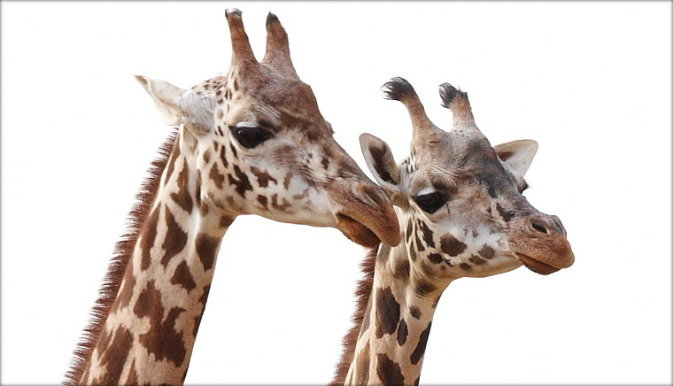

그레이트 사바나에는 얼룩말, 기린, 타조 등 서로 다른 초식동물들이 평화롭게 공존하고 있습니다. 멋진 뿔을 가진 신비의 동물 일런드와 세이블앤틸롭도 그레이트 사바나에 있지요. 이 곳에서는 가까이에서 동물들을 관찰하고 느낄 수 있습니다. 동물들을 만나면 존중과 사랑의 마음을 전해보세요.'나쿠펜다'



- 긴 목을 갖고 있으나 다른 포유류나 사람과 마찬가지로 7개의 목뼈를 갖고 있어요. 대신 기린의 목뼈는 하나하나가 모두 길어요.
머리가 매우 높은 곳에 있으므로 혈액을 뇌까지 보내려면 보통 포유동물의 혈압보다 2배 가량 높은 혈압을 나타내요. 그래서 심장도 훨씬 크고 무게도 많이 나가요. - 기린의 키는 4~5m로 항상 아파트 2층 높이에서 늘 세상을 바라보고 있어요. 키가 큰 만큼 멀리 볼 수 있고 시력도 매우 좋기 때문에 다른 동물들보다 적을 먼저 발견해요. 그래서 야생에서 얼룩말과 같은 다른 초식동물들은 기린과 함께 있는 것을 좋아해요.
- 목이 길긴 하지만 앞다리 보다 짧기 때문에 물을 마시기 위해서는 앞다리를 벌리고 고개를 숙여야 수면에 머리가 닿아요.
- 암수 모두 뼈로 구성된 2개의 뭉툭하고 짧은 뿔을 가지고 있어요.
- 50cm나 되는 길고 유연한 혀를 사용하여 나무에서 나뭇잎을 하나씩 뜯어 먹어요. 또 혀는 보랏빛을 띄고 있는데 이는 따가운 햇빛으로부터 혀를 보호하기 위해서 라고 생각 되요.
- 더운 아프리카에서는 저녁이나 아침에 활동성이 많고 더운 한낮에는 휴식을 취해요.
- 보통 서서 잠을 자는데 간혹가다 누워서 자기도 해요. 누워서 잘 때에는 뒷다리 아래 부분에 머리를 기대고 자요. 하지만 하루 3~4시간을 제외하고는 거의 잠을 자지 않아요.
- 자기방어를 할 때에는 앞다리로 차거나 긴 목을 휘두르며 머리로 쳐요.
| 학명 | Giraffa camelopardalis |
|---|---|
| 분류 | 우제목 기린과 |
| 멸종등급 | IUCN 적색목록 약관심종 (LC, Least Concern) |
| 분포 | 아프리카 사하라 남쪽 |
| 서식지 | 건조한 사바나, 개방된 산림 (건기에는 강 근처, 우기에는 산림) |
| 먹이 | 아카시아, 미모사, 야생 살구나무의 새싹, 덩굴식물, 포도, 허브종류 |
| 크기 | 키 : 수컷 5.3m, 암컷 4.3m 몸무게 : 수컷 1,100~1,932 kg, 암컷 700~1,182 kg 목길이 : 2.4 m 신생기린 : 키 1.8 m,몸무게 44~70 kg ※ 포유류 중에서 키가 가장 커요. |
| 사회구조 | 단독 또는 작은 무리로 관찰돼요. 보통 젊은 수컷은 수컷 무리를 이루다가 나이가 들면 단독생활을 해요. |